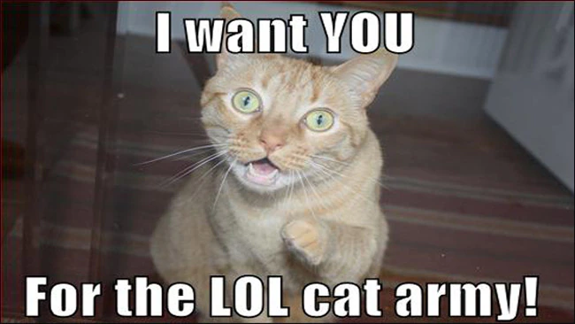

Orígenes de los Memes
El Origen de la Palabra "Meme"
El término "meme" fue acuñado por Richard Dawkins en su libro "El gen egoísta" publicado en 1976. Dawkins lo usó para describir una idea, comportamiento o estilo que se transmite de persona a persona dentro de una cultura.
Los Primeros Memes en Internet
Los primeros memes en internet se remontan a la década de 1990, cuando los foros de discusión y las salas de chat eran populares. Estos memes eran en su mayoría imágenes y textos graciosos que se compartían entre usuarios.
Uno de los primeros memes conocidos es el "Dancing Baby", un gif animado de un bebé bailando que se hizo viral en 1996.

El Auge de los Memes en las Redes Sociales
Con el surgimiento de las redes sociales a principios de los años 2000, los memes se convirtieron en una forma popular de comunicación en línea. Plataformas como Facebook, Reddit y 4chan facilitaron la creación y difusión de memes entre millones de usuarios.
Los memes como "LOLcats", "Rage Comics" y "Advice Animals" se volvieron extremadamente populares en esta época.
El Impacto Cultural de los Memes
Los memes han tenido un impacto significativo en la cultura popular y la sociedad en general. Han sido utilizados para expresar opiniones políticas, para promover productos y servicios, e incluso para generar conciencia sobre temas importantes.
La capacidad de los memes para difundirse rápidamente a través de internet los convierte en una herramienta poderosa para la comunicación y la influencia.